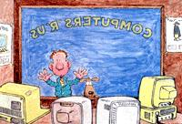
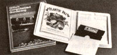

Now that the computer revolution has settled down to capable equipment at attractive prices, maybe it's time for you to start thinking about...
This is the time of year when most of us are planning our holiday shopping lists. And we'd naturally like to select presents that are as practical as they are attractive. One item that has both appeal and purpose is a home computer. Since its introduction some ten years ago, the small (or micro, as it's known in the industry) computer has grown in popularity to the point where 25% of all households in the U.S. now own or have access to one. What's more, it's estimated that over 40% of all homes will have a personal computer by 1990.
Contrary to popular lore, the computer isn't the number-crunching monster so many of us have come to envision. Rather, it's a tool that can be used to lighten our daily burden. Like the plow or tractor, a computer can relieve us of chores and allow us to use our time more productively. The variety of tasks a computer can take on increases daily. To many people, a computer is merely an expensive video game . . . but to an increasing number, it serves such roles as teacher, tax consultant, or even-as the sidebar on software shows-garden planner.
In each case, the computer offers a service. The extent of that service is a topic MOTHER will take up in future issues as we discuss some of the specific tasks a home computer can perform. For now, though, let's concern ourselves with the task of selecting a suitable machine by sorting through the many options available.
There are literally hundreds of computers to choose from today, ranging in price from a few hundred to many thousands of dollars. Home computers, the ones we'll be talking about here, generally fall into the $200 to $1,200 price range. And within this range, package prices will vary depending on the particular components needed. Some tasks, for instance, require a mechanical printer, while other applications need a device to hook the computer to a telephone line. The more complex you make your system, the more it will cost.
Basically, computer systems can be broken down into two types of components. First there's the hardware, central to which is the computer itself-the seemingly magical "black box" that makes everything happen. A video monitor connected to the computer tells you what the machine is thinking, and a keyboard lets you tell the computer what you're thinking. Keyboards come as a part of the computer package and may actually be integral. Monitors, however, are usually purchased separately-largely because there are a number of choices (see the sidebar "Video Monitors"), not because they're dispensable.
The second main component of a computer system is its software. Each of these packages of numerical instructions tells the computer how to perform a certain task. This article, for example, was written using a software package called a word processor. There are software packages that calculate taxes, estimate profits, and plan menus. The applications are limited only by your imagination and the physical traits of your machine. With the right software, even an inexpensive computer can perform an amazing variety of tasks; without it, the fanciest rig is useless.
Before you even start shopping for a computer, you should decide what you want the computer to do for you and how much you're willing to pay for that service.
What will be the computer's main use? Will it be for education-such as teaching the young ones their ABCs? Or perhaps you want a computer in order to hone your own math skills. If education fits your computer's job description, look for one that has a large and broad base of learning software. The computer itself should be capable of displaying attractive graphics, which are so important to keeping the attention of a child. Both the Radio Shack Color Computer and the Atari 800 handle graphics well, are inexpensive, and have quite a bit of educational software written for them. Apple may have the largest selection of educational software-because their II-series computers are often used in schools-but the firm's hardware and software are relatively expensive.
If you want a computer primarily for playing games, you should once again be looking for good graphics and a broad software base. Bear in mind, though, that most popular games are written for more than one computer, so don't let the availability of a particular game sway you too much. After all, when you tire of that game, what's to take its place?
For the more serious computer user, there are software packages for record keeping and for information processing. For these applications, a clear display of characters is more important than graphics capability. In computer lingo, a machine's record-keeping software is called a data base, and its information processing falls under the guise of a word processor or a spreadsheet. Don't let the jargon throw you: Word processors handle words, and spreadsheets manipulate numbers (it could as well be called a number processor). A knowledgeable salesperson can explain the capabilities of each and help you anticipate your needs.
If you're going to be using your computer for one of the more serious applications-which involve processing and sometimes storing data-you'll need to know about computer memory. There are essentially two types: permanent and temporary.
Permanent memory usually refers to the amount of information that can be stored on a program diskette. These plastic packages-which measure about 1/8" thick and 5-1/4" square-contain a round platter coated with magnetic material, usually iron oxide. This material records electrical impulses that the computer can recognize as program information. The maximum amount of data a diskette is able to store varies, depending on the make and model of computer.
Temporary memory will probably be the more important of the two types for your purposes. It resides inside the computer in an area called RAM (Random Access Memory), and is so named because it has no particular pattern to it. This memory is managed by the computer itself-you have no direct control over it-and is used to store bits of information as a program executes.
Let's say, for instance, that your software program lets you enter a sequence of numbers from the keyboard (it could be anything from a phone number list to the amounts on checks you've written). The numbers will undoubtedly be used in a subsequent process, but for the time being they just need to be put somewhere. So the computer places them in RAM. As the numbers are needed, the computer fetches them from the temporary memory and plugs them into the program.
Some programs require more memory than others, and it's usually information-processing software that requires the most. So when you're shopping for a computer, keep in mind the memory needs of the programs you plan to use-specifications are printed right on the software package-and make sure that the machine can meet the requirements. In the case of some computers, such as the IBM PC jr, RAM memory is expandable. The machine comes with the minimum complement of RAM, to which you can add more memory cells, up to a certain maximum set by the machine. Other computers, however, are limited to a set amount of RAM.
Once you've decided which computer to buy, your next hurdle is to find a place to purchase it. This can be trickier than it sounds, because many retailers who used to carry computers have found that the profit margins are no longer great enough to warrant stocking them. Your neighborhood computer store probably handles mostly businessoriented machines with capabilities and prices beyond your wants. Of the computers listed in the chart that accompanies this article, only the Apple IIc and the IBM PC jr (both of which are at the upper end of the price range) can be widely found in computer stores. The Radio Shack Color Computer, of course, is sold through that company's chain of stores.
Major department store chains are a good source of home computers, though you can't expect to do much bargaining. Look for sales to avoid paying full ticket price. Discount outlets, such as K-Mart, also have computers on hand this time of year, and they're likely to be heavily discounted.
Mail-order houses are often the lowest-price outlets for computers. In fact, MOTHER NO. 95 had an advertisement from a wholesale liquidator selling a $1,000 computing system for only $488. You should always be careful when buying through the mail, but I've checked out this particular advertiser personally and can guarantee that you would get just what is promised. The computer itself is a discontinued model made by one of the manufacturers mentioned in this article. In too many cases, however, you have to read the small print very carefully to see if the product being offered is the genuine article or a reasonable facsimile (see the sidebar "Compatibles") and if the system is actually complete.
The main disadvantages of buying at discount outlets or through the mail are that you'll receive little or no assistance in learning to use the machine, and that in most cases you'll be on your own in finding service after the sale. A good local dealer-ask other people who own computers which dealers are knowledgeable-can be worth paying extra money for.
An interesting approach that's becoming more popular these days is co-op buying. Computer-buying co-ops work just like any other cooperative-people band together to purchase in bulk at a reduced price. This is to the advantage of the manufacturer, retailer, and customer alike. To find out if there's a buying co-op near you, check with computer clubs, which can be located through dealers in the area.
You could also consider trying to buy secondhand, but-oddly enough-used computers aren't all that easy to find. Most people seem to affectionately hang on to their old computers when they upgrade, as if that old system were some long-standing relative. What's more, those who do part with their old computers often do so because they've been having problems with them-difficulties that you'd prefer not to inherit. In the home computer category, the main unit should probably be bought new. Peripherals such as printers and monitors, however, can be found used, often at significant savings.
When choosing a home computer, the software is at least as important as the hardware. You don't want to buy a computer-no matter how inexpensive-that has little software written for it; you also want to be sure that the machine has enough memory to run the software that's available for it. The final choice will usually be a compromise between your needs (and wants) and your finances.
You'll often run across the expression compatible when you're shopping for a computer. What is a compatible? Basically it's a copy of a popular computer. Not an exact copy, mind you-that would be illegal-but a reasonable facsimile. These imitators are often worth pursuing because they're less expensive. The most copied personal computer is the IBM PC, the machine that put the computer revolution into high gear. As a testimony to its achievements, no less than 20 IBM compatibles are available today, most of which sell for around two-thirds of what the genuine article costs. Some are duplicates (even down to the placement of the logo); others-such as Compaq-imitate IBM only at the software level. Some could be said to be superior to the original . . . others are clearly inferior.
In all instances, however, the compatible is supposed to run the same software that the original handles. In fact, the crux of the issue is software compatibility. It's far more important for the compatible to act like the original than to look like it.
When shopping for a compatible, keep in mind that compatibility can be a relative term. Some differences do exist (because of copyright laws), and some software written for the original may not run on a particular compatible. Let's hope it's not yours!
The question most people ask when the topic of home computers comes up is "What practical purpose do they serve?" As I already mentioned, MOTHER will, in fu ture issues, be discussing some of the software that may be of interest to her readers. But to give you a better idea of what to expect, MOTHER's staffers have reviewed a couple of pieces of gardening software: ORTHO'S COMPUTERIZED GARDENING and Home & Hobby Software's PLANTIN' PAL.
ORTHO'S COMPUTERIZED GARDENING is a two-sided disk and book package that has two main features: a personalized plant selector to help you choose-by zip code, height, bloom, light needs, etc.-the right landscape plants or houseplants for you (OCG does not deal with vegetables) .. . and a calendar recordkeeping aid. The plant selector is excellent: You tell the computer what requirements you have, and it shows you all the plants in its 750-entry master list that will work in your region, along with their caretaking needs. The calendar is limited by the fact that you can read only one day's entry at a time. COMPUTERIZED GARDENING comes in versions for IBM, Commodore 64, and Apple (11e, 11c, and MacIntosh) computers and costs $49.95 plus $3.00 shipping and handling from Ortho Information Services, 575 Market St., San Francisco, CA 94105. Recommended only for computerphiles who have real plant/ landscaping needs.
PLANTIN' PAL, on the other hand, deals with vegetable gardening. Its intent is to help you lay out your year's garden. Using an actual garden map and crop symbols-all of which you can print out to keep-PP helps you determine how much space you'll need for each of 40 crops (based on how many people you're feeding and whether or not you want to store the crop as well as eat it fresh). It can even incorporate companion planting. PAL costs $29.95 postpaid from Home & Hobby Software, Inc., 4936 Morgan Ave. South, Minneapolis, MN 55409; in versions for IBM PC/PCjr, Apple II+/IIe, and Commodore 64. The program allows you to juggle crops to find the perfect plan for your plot. It is, however, somewhat limited in that it presumes you'll use a wide-row garden (20" rows, 16" paths) and that it doesn't really incorporate succession plantings.
|
 |
 |
|